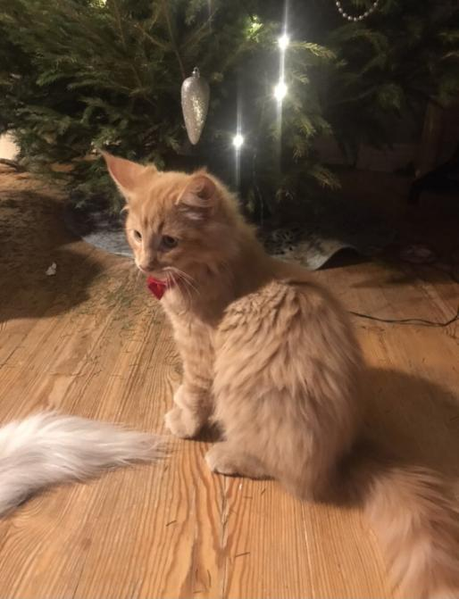
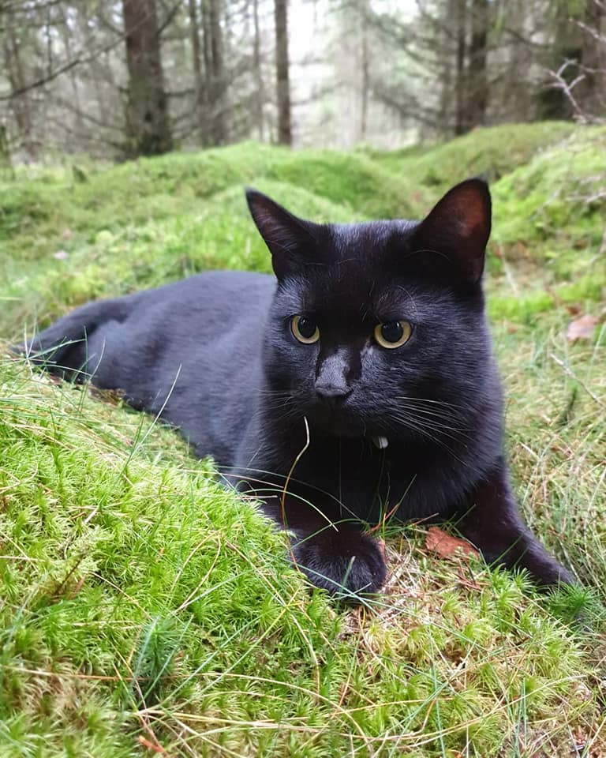

Fenix
Fenix is a Norwegian Forest cat. His name Fenix comes from the mythical character Phoenix, who is a big burning bird. The reason for the name is that Fenix is orange, which looks like fire. He is so far only a couple months old, around half a year when I am writing this. The image above is an older picture from christmas. On the left of the image you can also see my dog's tail. His name is Robin and he is a Cavalier King Charles Spaniel. Fun fact about his breed is that it is one of the few dog types who are allowed to enter churches, because it was a popular type amongst the rich some time ago.
Lukas
I also have another cat called Lukas. He is a stray cat that we found. Actually we did not find him, our neighbour did. He came to our house one evening and asked if the cat was ours, but it wasn’t. When he walked away with the cat it got scared and hid under our house, the next day we found him down there, took him in, and now he is a part of our family. Because he is a stray cat we don't know how old he is.
Robin

As mentioned before, we have a dog named Robin, who is a Cavalier King Charles Spaniel. We adopted him some years ago. As of writing this Robin is seven years old. Recently he hurt his back, and could barley get up on the couch. But now he is much better after several visits to the vet and after getting some medecine.
Images by Sara Magnevick Jarvoll, more here!